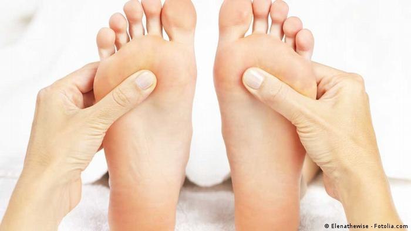

El "quiromasaje" es un método de exploración (mediante la palpación perceptiva) y de tratamiento manual, aplicado sobre la cubierta corporal y trasmitido por la presión mecánica de las manos a los diferentes órganos y tejidos del cuerpo humano, que tiene a la vez, efectos reguladores sobre el dolor, la sensación general de energía, los estados de ánimo, el cansancio y en general sobre la psique. Según la indicación y los objetivos de tratamiento propuestos, se pueden lograr efectos que generan acciones directas y/o reflejas sobre el organismo.
Es una técnica de masaje que se basa en la estimulación sobre unos puntos (llamadas zonas de reflejo) que encontramos en la nariz, manos, orejas, siendo la más común en los pies con la finalidad de tratar diferentes patologías.
Sus bases son fisiológicas y neurológicas , tienen una acción a distancia sobre órganos o tejidos a través de los puntos que se reflejan tensiones, dolores, enfermedades o bloqueos relacionados con diversos órganos.
Con el masaje o la presión, de estos puntos, se dispersa la retención de la energia responsable del desequilibrio, que se perciben como pequeñas estructuras cristalinas bajo los dedos que indican la existencia de un transtorno a este nivel y constituyen una indicación terapéutica muy valiosa.
Mediante la reflexología, se actúa sobre el conjunto de los sistemas orgánicos, circulación sanguínea, sistema linfático, endocrino, neurológico, osteoarticular. La planta del pie y el pie en su conjunto, representa en forma esquemática la totalidad del cuerpo y sus órganos.
Esta técnica permite actuar sobre un síntoma determinado o aliviar un dolor, pero también regular en profundidad la función de un órgano enfermo, mejorar la circulación corporal, favorecer la eliminación de los desechos, las toxinas y estimular la energía del organismo a fin de evitar nuevos desequilibrios.
Cada pie refleja una de las dos mitades del cuerpo, así los órganos que están en las zonas derecha se manifiestan en el pie derecho, los que son bilaterales como los riñones se reflejan uno en cada pie y la columna que está en el centro se refleja en ambos pies.
Prácticamente todos los órganos o partes anatómicas que constituyen el cuerpo humano se refleja en los pies a excepción de las manos, las muñecas, los antebrazos, los propios pies, los tobillos y las piernas (hasta las rodillas).
Cualquier desequilibrio, sobrecarga o alteración puede manifestarse en los pies. Teniendo en cuenta que en los casos que todavía no se ha desarrollado plenamente una enfermedad, esta ya se manifiesta en la zona refleja correspondiente.
La moxibustión es un tratamiento que forma parte de la medicina tradicional china. Utiliza las hojas pulverizadas, secadas y trituradas de la planta Artemisia abrotanum (abrótano macho) a la que se le da forma de cigarro denominado moxa.
La moxibustión busca generar un fluir de la energía para provocar el balance o equilibrio corporal en una persona.